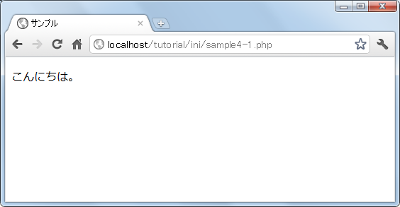

- Home ›
- PHP入門 ›
- PHPプログラムの基本事項
コメント
プログラムを記述していく上で、この部分はどんな目的でプログラムを記述していたかを残しておくと後からメンテナンスを行う上で役に立ちます。単に説明だけのために記述する文をコメントといいます。
コメントはPHPプログラムが実行される際に無視されますのでプログラムの出力結果などには影響しません。
PHPでプログラム中にコメントを記述する場合、3種類の方法が用意されています。
「#」を使ったコメント
まず最初の方法は「#」を使用する方法です。次のように記述します。
#コメント
プログラム中に「#」が現れた場合、「#」から行末までをコメントとして扱います。「#」は文の先頭に記述しその行を全てコメントとしてもいいですし、文の途中で記述してその位置より右側をコメントとしてもいいです。
<?php # 作成日 2011/12/11 echo "こんにちは"; # あいさつを出力 ?>
コメントはプログラムの実行時には無視されますので次のように記述したものと同じと解釈されます。
<?php echo "こんにちは"; ?>
「//」を使ったコメント
2つ目の方法は「//」を使用する方法です。次のように記述します。
//コメント
「#」の代わりに「//」を使用しているだけで使い方は同じです。「//」はC++言語でコメントを記述する場合の書式です。
例えば次のように記述します。
<?php // 作成日 2011/12/11 echo "こんにちは"; // あいさつを出力 ?>
「/*」と「*/」を使ったコメント
ここまでは特定の1行だけをコメントにする方法ですが、3つ目の方法である「/*」と「*/」を使用する方法は特定のブロックをまとめてコメントする場合に使用します。次のように記述します。
/* コメント コメント */
プログラムの中で「/*」が現れた場合、「*/」が現れるまでを全てコメントとして扱います。この形式はC言語でコメントを記述する場合の書式です。
例えば次のように記述します。
<?php /* 作成日 2011/12/11 */ echo "こんにちは"; /* あいさつを出力 */ ?>
このように「#」や「//」と同じような使い方も出来ますが、この書式の場合は行末までがコメントではなく「*/」が現れるまでがコメントとなるため複数行に渡ったブロックをまとめてコメントとすることが可能です。例えば次のように使います。
<?php /* 作成日 2011/12/11 作成者 山田 太郎 開発環境 PHP5.x */ echo "こんにちは"; ?>
上記の場合「/*」から「*/」までに含まれる全ての部分がコメントとなります。
いずれの方法であってもコメントとしての意味は同じですので使いやすいものを統一して使用されると宜しいのではないかと思います。
サンプルコード
では簡単なプログラムで試して見ます。
<!DOCTYPE html PUBLIC "-//W3C//DTD XHTML 1.0 Transitional//EN" "http://www.w3.org/TR/xhtml1/DTD/xhtml1-transitional.dtd"> <html xmlns="http://www.w3.org/1999/xhtml" xml:lang="ja" lang="ja"> <head> <meta http-equiv="Content-Type" content="text/html;charset=UTF-8" /> <title>サンプル</title> </head> <body> <p> <?php /* 作成日 2011/12/10 作成者 hogehoge Version 3.5 */ echo "こんにちは。"; # 画面に出力 ?> </p> </body> </html>
上記のファイルをWWWサーバのドキュメントルート以下に設置しブラウザからアクセスすると次のように表示されます。

今回は「/*」と「*/」を使ったブロック単位のコメントと、「#」を使って文の最後にコメントを記述しました。コメントは実行時には無視されますのでコメントをどれだけ記述しても実行結果には影響を与えません。
( Written by Tatsuo Ikura )

著者 / TATSUO IKURA
初心者～中級者の方を対象としたプログラミング方法や開発環境の構築の解説を行うサイトの運営を行っています。